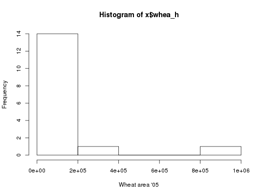
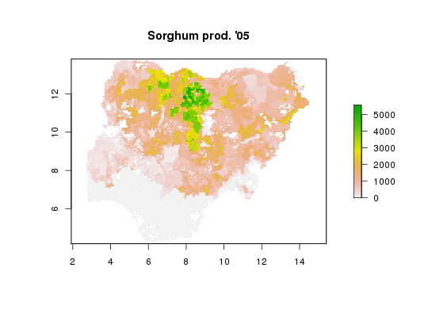

Package results from getLayer into tabular or spatial raster format.
Also includes README and Tabular Data Package specifications.
Currently supported export formats include CSV (csv), STATA (dta), GeoJSON (geojson),
GeoTIFF (tif), R raster (grd), RData (rda), ESRI ASCII raster (asc), and netCDF (nc).
Calling genFile(var="bmi", iso3="TZA", format="dta") is equivalent to calling
the convenience method hcapi(var="bmi", iso3="TZA", format="dta").
genFile(var, iso3 = "SSA", by = NULL, format = c("csv", "geojson", "tif", "dta", "asc", "rds", "grd"), dir = ".", ...)
getLayergetLayergetLayergetLayer,
e.g. as.class, collapse.character, array of generated file names included in the data package
API call: total wheat harvested area across 16 agro-ecological zones in Nigeria and Ethiopia in STATA format
$ curl http://hcapi.harvestchoice.org/ocpu/library/hcapi3/R/genFile \
-d '{"var" : "whea_h", "iso3" : ["NGA", "ETH"], "by" : "AEZ16_CLAS", "format" : "dta"}' \
-X POST -H 'Content-Type:application/json'
/ocpu/tmp/x0e654538b7/R/.val /ocpu/tmp/x0e654538b7/stdout /ocpu/tmp/x0e654538b7/warnings /ocpu/tmp/x0e654538b7/source /ocpu/tmp/x0e654538b7/console /ocpu/tmp/x0e654538b7/info /ocpu/tmp/x0e654538b7/files/DESCRIPTION /ocpu/tmp/x0e654538b7/files/README /ocpu/tmp/x0e654538b7/files/whea_h-AEZ16_CLAS-NGA.dta
GET all generated files in a ZIP archive
$ wget http://hcapi.harvestchoice.org/ocpu/tmp/x0e654538b7/zip
API call: sorghum production in Nigeria in ESRI ASCII raster format
$ curl http://hcapi.harvestchoice.org/ocpu/library/hcapi3/R/genFile \
-d '{"var" : "sorg_p", "format" : "asc"}' \
-X POST -H "Content-Type:application/json"
--
/ocpu/tmp/x02a7a044c7/R/.val
/ocpu/tmp/x02a7a044c7/stdout
/ocpu/tmp/x02a7a044c7/warnings
/ocpu/tmp/x02a7a044c7/source
/ocpu/tmp/x02a7a044c7/console
/ocpu/tmp/x02a7a044c7/info
/ocpu/tmp/x02a7a044c7/files/DESCRIPTION
/ocpu/tmp/x02a7a044c7/files/README
/ocpu/tmp/x02a7a044c7/files/sorg_p--SSA.asc
/ocpu/tmp/x02a7a044c7/files/sorg_p--SSA.asc.aux.xml
/ocpu/tmp/x02a7a044c7/files/sorg_p--SSA.prj
GET all generated files in a ZIP archive
$ wget http://hcapi.harvestchoice.org/ocpu/tmp/x02a7a044c7/zip
datapackage to generate associated metadata records
# Total wheat harvested area across 16 agro-ecological zones in Nigeria and Ethiopia # in STATA format x <- genFile("whea_h", iso3=c("NGA", "ETH"), by="AEZ16_CLAS", format="dta")#> Warning: the condition has length > 1 and only the first element will be used#> Warning: the condition has length > 1 and only the first element will be used# Load generated STATA file require(foreign) x <- read.dta(x[1]) # Plot histogram with full layer title hist(x$whea_h, xlab=vi["whea_h", varLabel])# Sorghum production in Nigeria in ESRI ASCII raster format x <- genFile("sorg_p", iso3="NGA", format="asc")#> Warning: colorTables valid for Byte type only in some drivers#> Warning: Unable to set color tablex#> [1] "./hcapi-nga-sorg_p.asc" "./hcapi-nga-sorg_p.asc.aux.xml" #> [3] "./hcapi-nga-sorg_p.prj" "./meta.csv" #> [5] "./README.md" "./datapackage.json"# Load and plot generated raster require(raster) x <- raster(x[1]) plot(x, main=vi["sorg_p", varLabel])cellStats(x, "mean")#> [1] 897.064